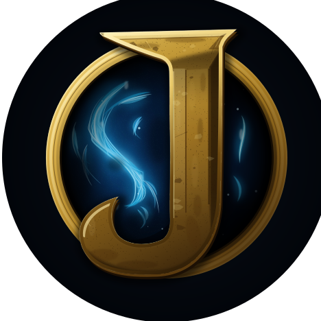

01 · Settled J + V8 orb
Editable layers · Figma 3325:191 / 3325:335

Header identity · #010305 client bar
82 px · desktop, 1920PORTFOLIO
42 px · mobile, 390PORTFOLIO
16 px · compact-size checkPORTFOLIO
At 16px the orb and ring reduce the J's available area substantially.
Activity rail · identity and row mark
48 px · identity
26 px · row16 pxJoshua · Portfolio
Placement read: use for large identity moments where the orb carries the intended V8 atmosphere. At 48px it remains recognizable; at 26px and 16px the ring competes with the letter.